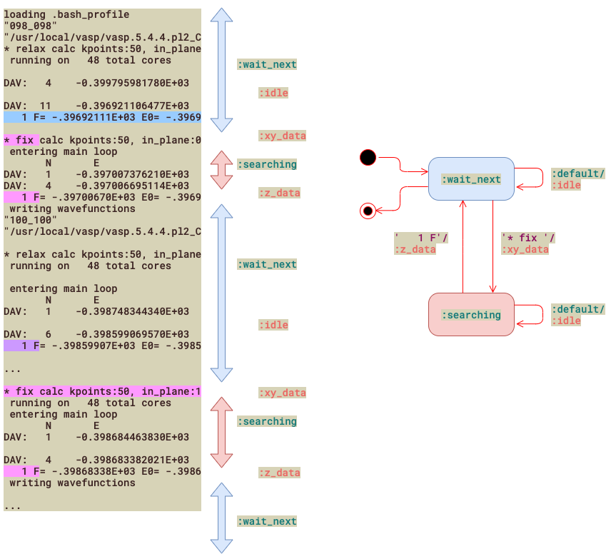

finite state element(fsm) 有限状態マシン
Table of Contents
1. Introduction
一行からデータを取り出すのに正規表現が使われるように， 長い文章や繰り返しから，データを抽出するのに 有限状態マシン(finite state machine)を利用する手があります． プログラマのバイブルの一つである 「達人プログラマー(pragmaticと呼ばれています)」[^RubyBestPractice]の 第2版でRubyコードで紹介されています[pp.175-9].
時間がないので，詳しくは紹介しませんが， でかい出力から，データを繰り返し抽出する必要がある時には， それほど難しくはないので，是非試してみてください． 具体事例があれば，部屋に持ってきていただけば， 実装ステップをお教えします．
2. 有限状態マシン-I(最初のベタベタcode)
たくさんのデータの中から必要な数値だけを取り出したいのですが，
- '1 F'に続く数値を取り出します．
- でもrelaxでは無視して，
- fixの時だけ数値を取り出して，
- '* fix 'でも数値を取り出して．．．
と説明はややこしいですね． やりたいことをポンチ絵にすると次の通りです．

これだと少しは理解できますか？ こういうことは日常のデータ処理でよく直面します．
これを'divide and conquer'で理解していきます． まずdivideするのは，状態(state)とactionにです． そして適切なtriggerとなるkeywordを抽出します． 一文にまとめると，
triggerにぶつかった時に状態(state)を変えて， 同時に適切な振る舞い(action)を取る．
ここまで書くと有限状態マシンであることが認識できると思います． UMLで書くと図右のようになります．
まずは，あまり凝らずにわかりやすく動作をベタ書きしたコードです．
1: require 'scanf' 2: file = ARGV[0] || "./relax_calc.o22733" 3: 4: state = false 5: all_data = [] 6: 7: File.readlines(file).each do |line| 8: if line.match(/fix/) 9: all_data << line.scanf("* fix calc kpoints:50, in_plane:%f, vertical:%f") 10: state = true 11: end 12: 13: if state 14: if line.match(/1 F=/) 15: all_data[-1] << line.scanf("1 F= %f E0= %f d E =%f")[0] 16: state = false 17: end 18: end 19: end 20: 21: all_data.each do |data| 22: puts "[%5.3f, %5.3f, %10.5f]," % data 23: end
3. 有限状態マシン-II(state, event)
さらに明示的に有限状態マシンの状態遷移をcodingする書き方です[^PragmaticProgrammerV2]. 少し難しいんですが，焼き直すと次のようになります．
1: require 'scanf' 2: file = ARGV[0] || "./relax_calc.o22733" 3: 4: TRANS = { 5: wait_next: {xy_data: :searching}, 6: searching: {idle: :searching, z_data: :wait_next} 7: } 8: 9: state = :wait_next 10: 11: all_data = [] 12: File.readlines(file).each do |line| 13: case state 14: when :wait_next 15: if line.match(/fix/) 16: state = TRANS[state][:xy_data] 17: all_data << line.scanf( 18: "* fix calc kpoints:50, in_plane:%f, vertical:%f") 19: end 20: when :searching 21: if line.match(/1 F=/) 22: state = TRANS[state][:z_data] 23: all_data[-1] << line.scanf("1 F= %f E0= %f d E =%f")[0] 24: else 25: state = TRANS[state][:idle] 26: end 27: end 28: end 29: 30: all_data.each do |data| 31: puts "[%5.3f, %5.3f, %10.5f]," % data 32: end
- `state=:wait_next` の間は，読んでて，
- ':in_data'に遭遇すると'state=:searching'に遷移し,
- ':match_data'で'state = :wait_next'に遷移します．
コツは，'TRANS'というのをあらかじめ用意しておいて， eventと遷移(transition)先を明示してやることのようです．
4. 有限状態マシン-III(state, action分離版)
さらにstateとactionを使って，状態遷移と動作を分離する例がp.177にあります．
これを実装すると以下の通りです．
1: require 'scanf' 2: file = ARGV[0] || "./relax_calc.o22733" 3: 4: TRANS = { 5: wait_next: { 6: '* fix ' => [:searching , :xy_data], 7: :default => [:wait_next, :idle] 8: }, 9: searching: { 10: ' 1 F' => [:wait_next, :z_data], 11: :default => [:searching, :idle] 12: } 13: } 14: 15: state = :wait_next 16: 17: all_data = [] 18: File.readlines(file).each do |line| 19: state, action = TRANS[state][line[0..5]] || 20: TRANS[state][:default] 21: case action 22: when :idle 23: when :xy_data 24: all_data << line.scanf( 25: "* fix calc kpoints:50, in_plane:%f, vertical:%f") 26: when :z_data 27: all_data[-1] << line.scanf("1 F= %f E0= %f d E =%f")[0] 28: end 29: end 30: 31: all_data.each do |data| 32: puts "[%5.3f, %5.3f, %10.5f]," % data 33: end
こうするとcodeが短くなりますよね． triggerをおしゃれに組み込んでいますが，こういうのをスッと書けるのが Rubyの魅力です．
ただ，debugがしんどいので相当確信を持ってrefactoringしています． ただ，Huntらが言う通り，広い対象にこのパターンは使えます． こういうの(fsmによるデータ抽出)があると覚えておくと便利です．
5. ベストプラクティスから
初めてこのことに言及したテキスト[^RubyBestPractice]のメモを残しておきます． そこでは，状態の遷移とactionを違ったブロックに分けて処理していました．
複雑な構文がたくさん繰り返されるときに便利な手法です． よくあるのは，以下のようにkeywordで囲まれたブロックの塊です．
StartCharMetrics 315 C 32 ; WX 278 ; N space ; B 0 0 0 0 ; C 33 ; WX 278 ; N exclam ; B 90 0 187 718 ; C 34 ; WX 355 ; N quotedbl ; B 70 463 285 718 ; C 35 ; WX 556 ; N numbersign ; B 28 0 529 688 ; C 36 ; WX 556 ; N dollar ; B 32 -115 520 775 ; .... EndCharMetrics
Endはないこともあります．
こういうときに便利なのが次のようにブロックの中なのか外なのかを 判断しながらデータを取り出していく手法です．
section = [] File.foreach(file_name) do |line| case line when /^Start(\w+)/ section.push $1 next when /^End(\w+)/ section.pop next end end
状態(in "FontMetircs", or other)をsectionに溜め込みながら逐次的に処理していきます．
データを読み取る方は
case section when ["FontMetrics", "CharMetrics"] next unless line =~ /^CH?\s/ name = line[/\bN\s+(\.?\w+)\s*;/, 1] @glyph_widths[name] = line[/\bWX\s+(\d+)\s*;/, 1].to_i @bounding_boxes[name] = line[/\bB\s+([^;]+);/, 1].to_s.rstrip when ["FontMetrics", "KernData", "KernPairs"] next unless line =~ /^KPX\s+(\.?\w+)\s+(\.?\w+)\s+(-?\d+)/ @kern_pairs[[$1, $2]] = $3.to_i when ["FontMetrics", "KernData", "TrackKern"], ["FontMetrics", "Composites"] next else parse_generic_afm_attribute(line) end
という感じで，caseに従って読み取る内容を分けています．
6. 参照文献
[^PragmaticProgrammerV2]: 達人プログラマー(第2版): 熟達に向けたあなたの旅 (日本語) 単行本 – 2020/11/21 David Thomas (著), Andrew Hunt (著), 村上 雅章 (翻訳), オーム社; 第2版 (2020/11/21), p176.
[^RubyBestPractice]: Rubyベストプラクティス -プロフェッショナルによるコードとテクニック，Gregory Brown (著), 高橋 征義 (監訳), 笹井 崇司 (翻訳)、オライリージャパン (2010/3/26)， Ruby Best Practices by Gregory T Brown, O'Reilly,